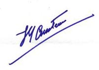

|
|
WARTIME - REG VALLINTINE
 During
the war frogmen were using autonomous oxygen apparatus, the descendant of Fleuss’
equipment. Very successfully putting limpet mines onto ships; winning Victoria
Crosses. The equipment was also used by Charioteers
During
the war frogmen were using autonomous oxygen apparatus, the descendant of Fleuss’
equipment. Very successfully putting limpet mines onto ships; winning Victoria
Crosses. The equipment was also used by Charioteers
The Chariot ROYAL NAVAL FILM UNIT, 1942
THE IMPERIAL WAR MUSEUM
who sat astride torpedoes and these exploits are well documented.
JACQUES COUSTEAU - REG VALLINTINE
We then come to the final stage where a French navy officer called Cousteau met an engineer called Gagnan, produced the first fully automatic demand valve, linked to a high pressure cylinder, produced the aqualung or scuba as we know it today and opened the sport to millions.
During 1936 a French Navy Gunner, Jacques Cousteau waded into the Mediterranean Sea, near Toulon armed with a pair of Fernez goggles,
CAPITAINE JACQUES-YVES COUSTEAU (1910-1997)
intent on perfecting his crawl swimming style. Two years later he found himself teaming up with Philippe Tailliez and Frédéric Dumas for some early snorkel diving experience.

Undersea World CAPITAINE COUSTEAU, 1936
After some abortive, nearly fatal, experiments with self-designed oxygen rebreathing apparatus in the late 1930s, Cousteau met Émile Gagnan in Paris during December of 1942.
EMILE GAGNAN Gazogène
Gagnan had developed a demand valve for feeding cooking gas automatically into converted car engines.
CINÉMATHÈQUE MONDIALE
DE LA MER
ET DE L’EXPLORATION OF TOULON
A few weeks later, fired by Cousteau’s suggestions, the first two stage diving regulator was ready for testing. It worked when swimming horizontally, but failed to give air when the diver had his feet above his head and poured air into the water when the diver’s head was uppermost.
Undersea World CAPITAINE COUSTEAU, 1943
The solution was soon realised: the exhaust valve had to be placed as close to the intake as possible so that pressure variations would not upset the air flow.
Initial experiments were carried out examining and exploring wrecks, often with Cousteau behind the camera and Dumas acting as the subject. The Dalton was a 5,000 ton British steamer on charter to a Greek navigation company. After departing Marseille on Christmas night 1928, with a cargo of lead, it headed for the Planier Island light and promptly struck the shore and foundered, sinking to a depth of 50' at the bow end. The lighthouse keepers managed to rescue all hands, who they reputedly found to be drunk - everyone from cabin boy to skipper!
Another wreck they explored was the deep sea tug, Polyphème, scuttled off Hyères at the gate of the antisubmarine nets which she had been tending on 27th November 1942.
 The
Cousteau-Gagnan valve supplies air at the same pressure as the water that the
diver is swimming through. It works in a two stage operation. The first stage
is a pressure reducer, to seven atmospheres above ambient.
The
Cousteau-Gagnan valve supplies air at the same pressure as the water that the
diver is swimming through. It works in a two stage operation. The first stage
is a pressure reducer, to seven atmospheres above ambient.
It is in contact with the surroundings via a diaphragm. A spring opens the valve when the air pressure drops or depth increases. Air pressure closes the valve when the preset level is reached.
When the diver takes a breath the pressure in the regulator drops, depressing the larger diaphragm and opening the second stage. Air then flows until the end of the inhalation when the pressure rises and closes it again.
The exhaust must be at the same level as the second stage, and so is carried back via a second hose.
Cousteau’s new apparatus allowed him and his team to examine sea creatures in their own element, following on from the work initiated by Hans Hass.
Through the successful marketing of the 1st automatic aqualung, or scuba diving apparatus, Cousteau became internationally known and his TV film series featuring his ship Calypso made him a household name.
Sharks, as Hans Hass had found, were not normally a problem, but one day in the open sea between two islands of the Cape Verde group, out of the grey haze appeared an 8 foot long light-grey shark, accompanied by its unshakable pilot fish. In spite of previous success in deflecting sharks, gesticulation, air bubbles and shouting all came to no avail. Cousteau finally rammed the camera against its nose and the film jammed.
Some time later the diving boat ended their ordeal by sailing overhead, but not before the sharks had circled relentlessly and driven a respectful fear into the divers...
SCUBA CLUBS - REG VALLINTINE
At this time hundreds of amateur diving clubs were formed in many countries. The Cave Diving Group formed in 1946; the British Sub-Aqua Club in 1953; the French Federation and other groups of clubs.
|
|